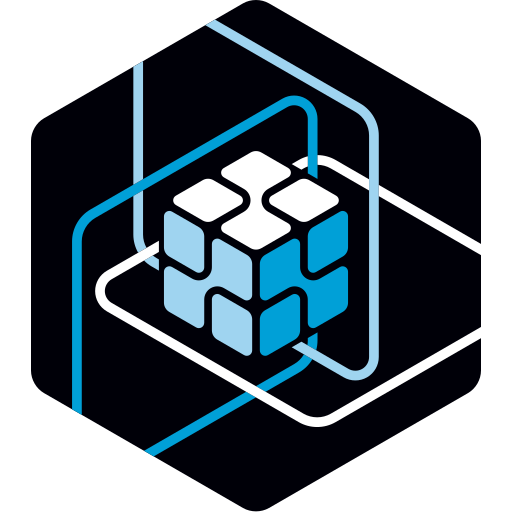

Обзор платформы для потенциальных инвесторов
ODANT — платформа, в которой структура папок одновременно является базой данных, API и пользовательским интерфейсом. WORK — прикладное PaaS-решение на базе ODANT для цифровой работы организаций: чат, документы, звонки, календарь, почта и ИИ-память в единой модели — без классического разрыва между мессенджером, файловым хранилищем, CRM и кастомной разработкой.
Современная организация вынуждена собирать цифровой контур из разрозненных продуктов. Мессенджеры хранят переписку отдельно от документов. Диски и офисные редакторы не связаны с контекстом решений. CRM и ERP требуют дорогой интеграции. Корпоративный ИИ часто работает на данных, ушедших во внешние SaaS-сервисы. Для регулируемых отраслей критичен on-premise и суверенитет данных — но классический стек из десятка вендоров это усложняет.
| Область | Типичное решение | Последствие |
|---|---|---|
| Коммуникации | Slack, Teams, Telegram | Сообщения оторваны от документов и процессов |
| Документы | SharePoint, Google Drive, OnlyOffice | Нет единого контекста переписки и решений |
| Процессы | CRM, ERP, low-code | Vendor lock-in, высокая стоимость интеграций |
| ИИ | Внешние copilot, корпоративный RAG | Данные вне периметра, слабый контроль |
Итог для бизнеса: высокая совокупная стоимость владения (TCO), фрагментированная история деятельности, слабая аудируемость и медленная адаптация IT-системы под реальные практики подразделений.
Платформа ODANT реализует файлово-событийную модель. Любая рабочая активность материализуется как файл в иерархии хранилищ организации. Сохранение файла — это событие с версией в history, записью в журнале (logs) и возможностью последующего ИИ-анализа. Главный продуктовый объект — не файл сам по себе, а событие деятельности в хранилище.
Организация моделируется иерархией хранилищ (подразделения). Пользователи создают артефакты: сообщения, документы, письма, звонки, ответы ИИ. Система накапливает единый след — основу для аудита, аналитики и RAG-памяти организации.
$folder, $storage, $file, $user).
URL равен пути к объекту, метод API — query-параметр. Отдельные БД, REST-контроллеры
и фронтенд-роутинг не проектируются вручную — они вырастают из дерева каталогов.
message.txt, ответ ИИ — как response.md,
вложения — как файлы со связями. Один след для чата, аудита и RAG.
| Уровень | Назначение |
|---|---|
ODANT — ядро (sources/) |
HTTP-сервер, навигация по FS, merge data.js, auth, logs, security |
ODANT — UI ODA (oda/) |
Web Components, layouts, формы, диалоги |
ODANT — типы и расширяемость ($server/) |
Системные типы, handlers, наследование, lib — основа для прикладных решений |
WORK — PaaS-решение (root/, модули) |
Готовая поставка для организаций: чат, звонки, почта, календарь, документы, RAG, explorer |
ODANT — технологическая платформа и экосистема расширений. WORK — коммерчески готовое PaaS-решение (включая white-label и self-hosted), построенное на этой платформе.
~/client/pages/) — файловые и табличные представления
Рабочее демо развёрнуто на current.odant.org.
Локальный запуск: npm install && npm start → http://localhost:8001.
| Направление | Описание |
|---|---|
| Лицензия ODANT (platform) | Доступ к платформе для разработки собственных решений и интеграторов |
| WORK PaaS / white-label | Подписка за готовое прикладное решение: брендированный контур, свой домен, on-premise |
| Enterprise / on-premise | Внедрение WORK, техническая поддержка, защищённый периметр |
| Модули и интеграции | OnlyOffice, AI, телефония, отраслевые handlers |
| ИИ-слой (premium) | RAG, агенты администратора, аналитика процессов |
Экономика продукта усиливается с глубиной внедрения WORK: чем больше организация «живёт» в решении (события → файлы → logs → RAG), тем выше ценность платформы ODANT и стоимость переключения на альтернативу.
| Критерий | Классические SaaS | ODANT / WORK |
|---|---|---|
| Размещение данных | У вендора | У клиента (self-hosted WORK на ODANT) |
| История процессов | Разрозненная по продуктам | Единый файлово-событийный след |
| Кастомизация | API, плагины, ограниченный no-code | Наследование типов и handlers на диске |
| ИИ | Внешние copilot | Встроенный RAG по памяти организации |
| Скорость адаптации | Месяцы интеграций | Дни: новый тип или handler без пересборки ядра |
Технологический ров: фрактальная FS с merge data.js, единая модель событий
и наследуемый UI — архитектура, которую сложно быстро воспроизвести поверх классического стека
«БД + REST + SPA».
Уже реализовано: платформа ODANT (ядро, ODA, типы), PaaS-решение WORK (чат, звонки, документы, RAG, explorer), публичное демо на current.odant.org.
Ближайшие шаги:
~/client/pages/) как основной продуктовый интерфейсСтратегическое направление: автопрограммирование — ИИ-агент администратора
адаптирует типы, data.js и handlers по команде в чате, с подтверждением и аудитом
изменений. Долгосрочная цель — WORK как операционная система организации на платформе ODANT,
которая учится на практике подразделений.
| Риск | Митигация |
|---|---|
| Сложность объяснения концепции «FS = платформа» | Фокус на продуктовых сценариях: чат + документы + ИИ на своих данных |
| Конкуренция с экосистемами Microsoft, Google | Ниша: self-hosted, white-label, суверенитет данных, глубокая кастомизация |
| Зрелость отдельных модулей | Модульная архитектура: ядро стабильно, прикладное наращивается поэтапно |
ODANT — технологическая платформа нового типа. WORK — готовое PaaS-решение для организаций, построенное на ней. Вместе они дают:
Инвестиционная возможность: платформа ODANT как технологический фундамент и WORK PaaS как коммерческий продукт для сегментов, где критичны контроль данных, интеграция коммуникаций с документами и ИИ на собственных материалах компании.
Документ подготовлен на основе архитектуры платформы ODANT и PaaS-решения WORK. Разделы «команда», «пилоты», «финансовые метрики» и «запрос инвестиций» заполняются перед конкретным питчем. Техническая документация: README.md, whitepaper.md в репозитории.